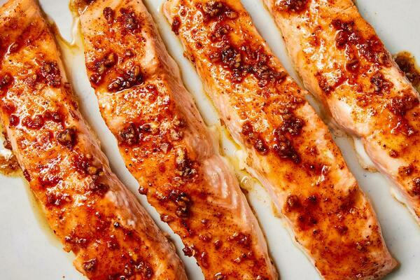

Baked Salmon

Home
Description
A quick and simple dinner recipe that will make you addicted.
I personally recommend only keeping the salmon salted for about 15 minutes before baking. Enjoy!
Ingredients
- 4 (6-oz) skin-on or skinless salmon fillets
- 2 tbs olive oil
- 2 tsp minced garlic
- 2 tsp light brown sugar
- 2 tsp kosher salt
- 1 tsp sweet or smoked paprika
- 1/2 tsp black pepper
- Half a lemon for serving
Preparation
- Heat the oven to 400 degrees and line a sheet pan with parchment paper.
- Pat the salmon dry with paper towels and place on the sheet pan. Brush the fillets all over with the olive oil.
- In a small bowl, combine the garlic, brown sugar, salt, paprika and pepper. Sprinkle the spice mixture over the fillets, pressing gently to coat the tops and sides.
- Bake the salmon until it flakes easily and is just cooked in the center, 12 to 15 minutes, depending on the thickness of the fillets. Squeeze the lemon over the fish and serve.
Home